Wed Gia Đình
Xin Chào Mọi Người Đây Là Wed Riêng Của Gia Đình Tớ,Tớ Là Người Thuộc Quyền Kiểm Soát Nó
Đây là thông tin liên hệ mình nha
Mình nhận làm wed nha
Ấn Vào để đến
Facebook mình nha

số điện thoại nha đó cũng là zalo luôn nha
zalo:0335201186
- Dầu tiên mình xin giới thiệu về 4 thành viên của gia đình tớ
- Tớ xin sơ sơ lược về gia đình tớ một cách chung
- Xin chào tất cả mọi người sau đây tớ xin sơ lược về gia đình tớ.Gia đình tớ có 4 người gồm có 4 người sau đây là
sơ lược về 4 thành viên đó
Nhưng đầu tiên tớ muốn giới thiệu vị trí của tớ đã nhé hihi.Gia đình tớ thuộc một xã của huyện Đà Bắc-tỉnh Hòa
Bình nếu viết đủ chỗ tôi ở thì sẽ là
Xóm Mới-Xã Đồng Chum-Huyện Đà Bắc-Tỉnh Hòa Bình
Và sau đây là sơ lược về 4 thành viên chính của gia đình tớ
Mình đầu tiên
Ấn vào ảnh để đến thông tin của mình
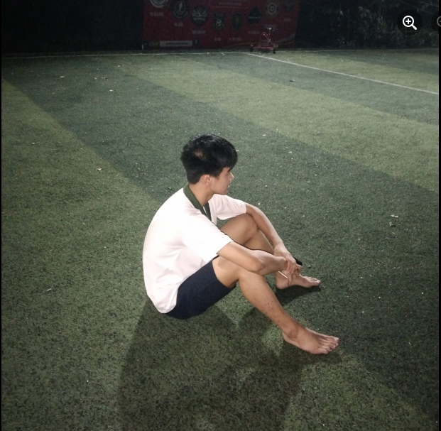
Đây là em mình
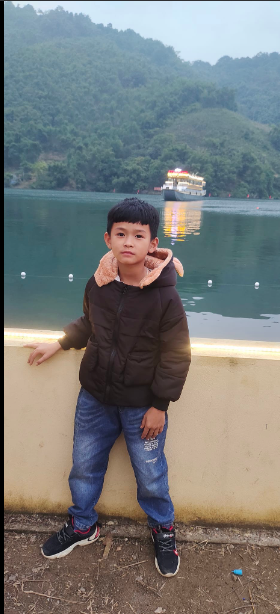
Tiếp theo đây là Bố mình
Tiếp theo đây là Mẹ mình
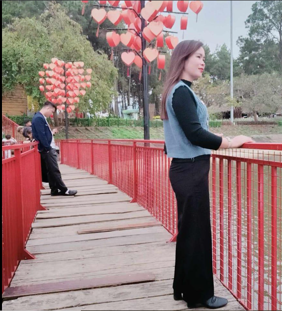
Đây là ngôi nhà mình
Nằm ở Xóm Mới,Xã Đồng Chum,Huyện Đà Bắc,Tỉnh Hòa Bình
(Ấn vào ảnh để biết rõ vị trí)

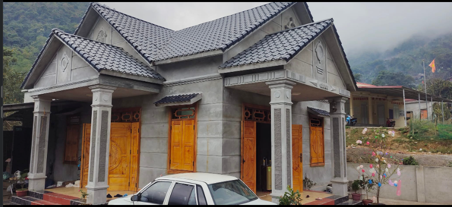
Đây là thông tin giới thiệu có một số phần lỗi nên mình cho ở đây
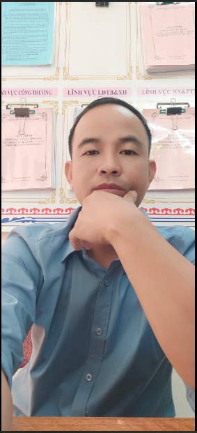
Bố tôi là một nhân viên bên Xã và đang làm ở Ủy Ban Nhân Dân Xã Đồng Chum
-
Bố tôi tên là Xa Văn Đương sinh ngày 20/11/1986
- Thực sự nhiều lúc mình trách bố mình cx như thương bố mình rất nhiều Từ khi hiểu và biết suy nghĩ về đồng tiền
mình rất thương bố vì đôi lúc thấy bố 2h sáng vẫn ra cơ quan làm mặc dù lạnh lắm hoặc là thức đến khuya để làm
đánh đổi sức khỏe để đổi lấy đồng tiền và tiêu vì chúng con không chút tiếc nuối vì đó là mồ hôi công sức của
mình
Nhưng bố có một số tính xấu làm mình và mẹ rất buồn đôi lúc muốn nói với bố lắm nhưng một thằng 15 tuổi thì chắc
chắn nó sẽ tạo khoảng cách với bố đúng ko mọi người
Mình cũng chỉ mong bố sẽ nhìn và mẹ và 2 anh em mình để thay đổi thực sự đôi lúc mình rất ko thích bố nhưng cũng
không trách bố quá lâu được.
Từ ngày xưa mình đã ko thích bố lắm rồi vì bố mình hay cọc lắm và dạy mình khác hoàn toàn mẹ
Mẹ nhẹ nhàng còn bố thì cọc lắm nên mình rất sợ cũng như không thích bố nhưng mình lớn dần và hiểu ra rằng bố
làm vậy để mình kiên cường lên vì chắc chắn sau này bố già đi người gồng gánh cả gia đình là mình con cả chứ ko
ai khác
Mình cũng mong gđ mình ai cũng cố gắng vì nhau và có thật nhiều cuộc đi chơi vui vẻ để có những kỉ niệm đẹp để
sau này bố mẹ già, chúng ta lớn và nhìn lại sẽ là những kỉ niệm đẹp 🥰🥰
Mình cũng ước mình lớn thất nhanh kiếm được tiền nhanh nhất có thể để giúp được phần nào cho bố 🥰
Và luôn cố gắng học để hoàn thành điều đó
Mong rằng điều ước sẽ được thành hiện thực và gia đình sẽ mãi vui vẻ tiếng nói cười
Bố mình là người nhà nước nên mình cũng rất tự hào
Sai thì sửa lỗi lầm thì bù thôi 🥰
Còn Đây là em mình
Một con nhà nông chính hiệu
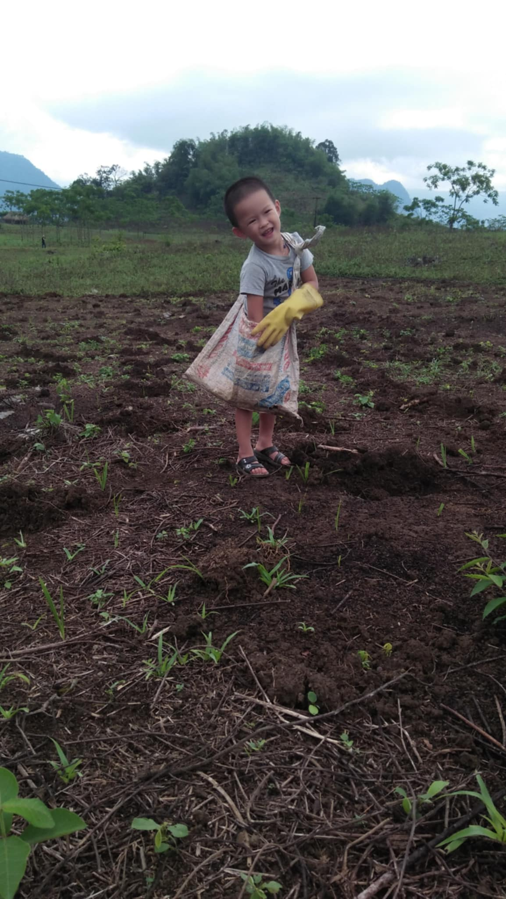
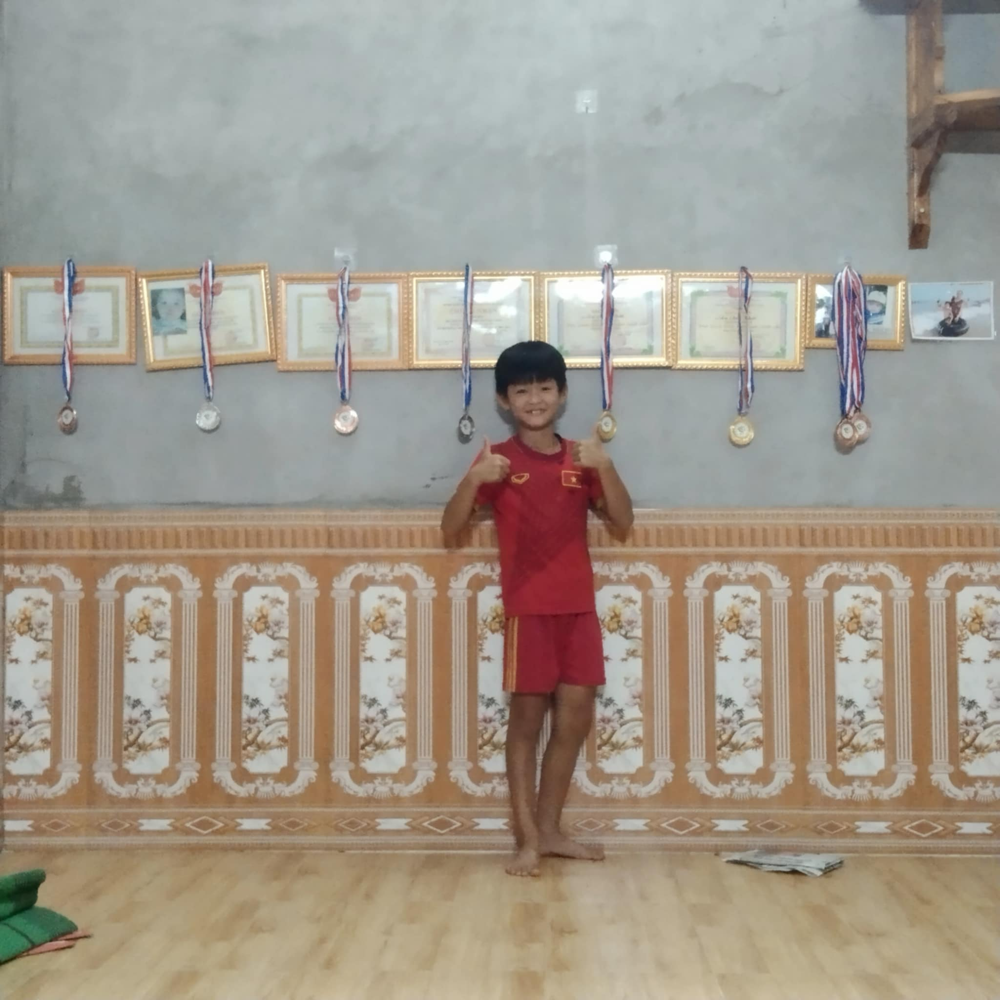
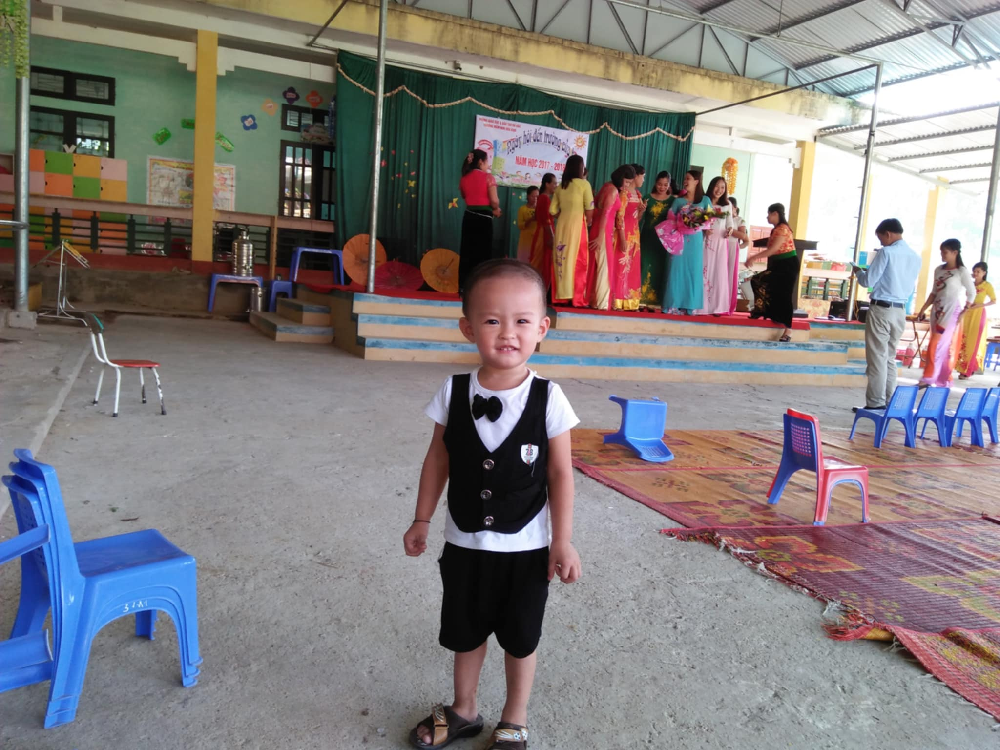
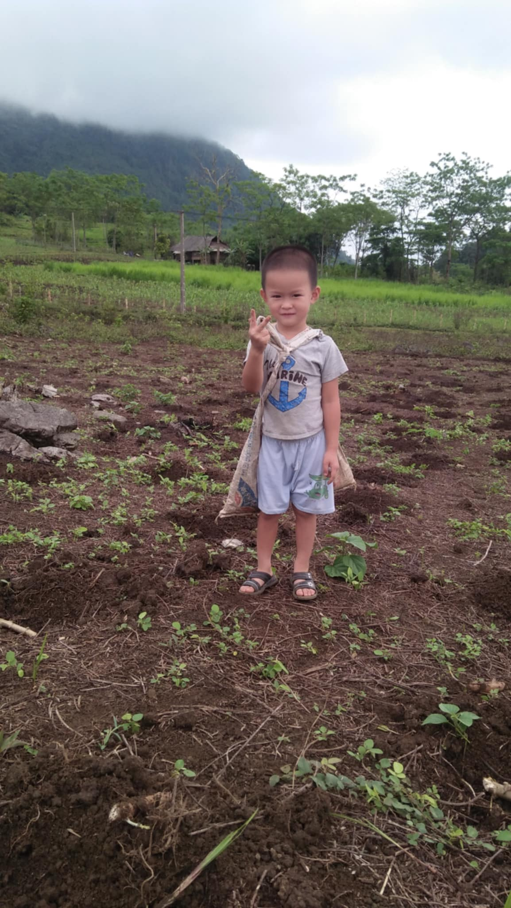
Em mình tên là Xa Anh Khải em mình sinh ngày 12/6/2012 hiện tại đang học tại trường TH Đồng
Chum,thằng này tính cách khá vui vẻ nói nhiều những đôi lúc thì hơi nghịch ngợm.Nhưng khia ra ngoài nó khá là nhát
và sợ sệt tôi không biết tại sao vậy nhưng có lẽ là còn nhỏ nên là vậy.
-
Những điều em mình thích
- Tôi cũng không biết rõ được sở thích của em mình nhiều nữa vì nó khá sợ tiếp súc với mình vì ở mình khá hay
cọc tính vì bố mẹ khá chiều nó nên mình muốn dạy nó rằng em nó rằng ngoài kia không phải ai cũng nhẹ nhàng
đối xử với nó
Vậy cho nên tôi chỉ biết một số sở thích và điều em mình bằng này thôi
- Em mình khá là thích chơi xe điện ở ngoài khu quảng trường ( nhưng mình ở quê nên chỉ khi ra thành phố mới
được chơi thỏa thích ) nhưng bây giờ ở chỗ mình đã có nhưng chỉ là 1 sân bóng nhỏ nhưng mỗi khi đi chơi cũng
thấy em mình vui lắm
- Em mình lại không thích đá bóng như mình và bố mình em mình lại khá thích bóng chuyền hơn mặc dù mình thấy
nó đá bóng cũng khá hay
- Em mình khá là thích bám bố em mình đi đâu cx có bố và bám bố hơn mình rất nhiều
- Em mình rất thích ăn xúc xích thấy xúc xích là outo đòi ăn tuy đôi lúc bị bố cấm vì sợ không an toàn nhưng
vẫn đòi được ăn
-
Đó chỉ là những điều bình thường mình biết ở em mình vì mình khá cọc cằn nên em khá ngại ở với mình
- Nhưng có lẽ sau này nó lớn lên em no sẽ hiểu được những thứ đó mình làm thực sự có ý nghĩa.Vì mình làm vậy để nó
không bị hư bởi sự chiều chuộm của bố mẹ và sau này ra đời nó không coi ai ra gì đó cũng là lido sao em nó sợ
mình hơn bố mẹ
- Nhưng đôi lúc tớ cũng thấy thương em nó lắm vì đôi lúc có gì ăn dù chỉ 1 chút nó cx nhớ đến mình và biết
mình thích ăn chocopai nên khi có nó sẽ nghĩ đến mình dù 1 cái nó vẫn chạy về nhà đưa cho mình.Mặc dù đôi
lức mình chơi game thua nó gõ cửa và mình cọc nó nhưng nó vẫn e thẹn đưa cho mình và sau đó mình rất hối lỗi
và sau đó mình cũng thân vơi em hơn và hiểu em hơn và mình cố gắng thay đổi tính cọc của mình để 2 anh em
được vui vẻ hơn chỉ cọc khi dạy nó,vì mình biết trẻ con mà nhẹ nhàng với nó quá nó sẽ được đà lẫn tới nên bố
mẹ vẫn cứ vậy nên
mình phải dạy em mình để sau này nó không hư và làm khổ bố mẹ
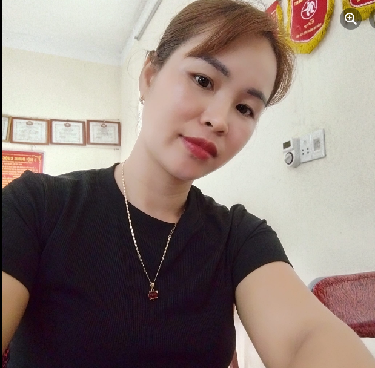
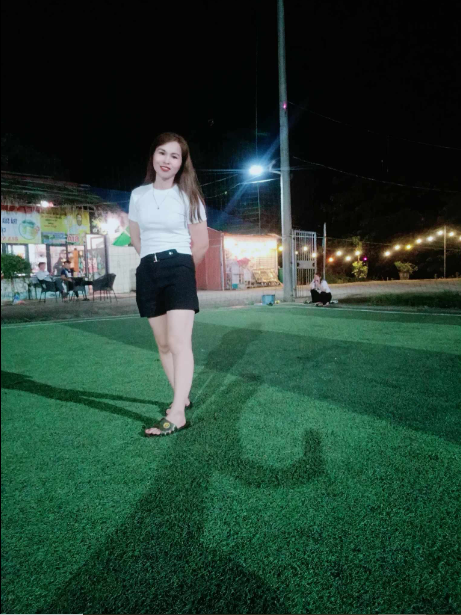
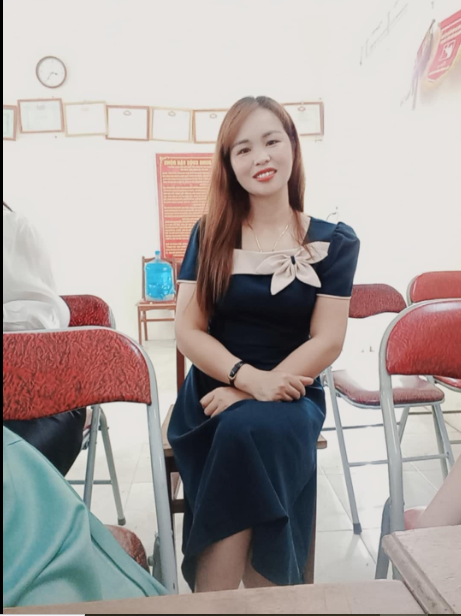
Mẹ mình tên là Xa Thị Lan,mẹ mình sinh 15/12/1986.Tuy mẹ mình không làm người nhà nước như Bố mình
nhưng mẹ mình làị là người cố gắng nuôi bố mình đi học cùng ông Bà Nội mình trải qua bao nhiêu công việc để
kiến sống ở quê vừa vất vả nuôi Bố vừa nuôi
2 anh em mình.tuy Mẹ mình chỉ là nông dân nhưng mình vẫn luôn tự hòa về người Mẹ tuyệt vời của mình
- Có lẽ đây là dòng tâm sự mà khi ai đọc cùng cảm thấy thương mẹ nhiều hơn
Đôi lúc mình thấy bực cho mẹ lắm vì:
Mẹ ko biết lo cho mình mà cứ lo cho bố và 2 anh em mình và chăm sóc bản thân mình và thêm cả cái điều đó là
làm việc quá nhiều đôi lúc mình cũng bực lắm nói mẹ mẹ mới nghỉ mình biết mẹ làm vậy để mình không phải
thiệt thòi với ai
Mình biết mẹ cũng có tham vọng và ước mơ nhưng ngày nhỏ mình hỏi " Sao mẹ lại không có ước mơ gì và công
việc khác nhỉ " Nhưng...sau này mẹ cũng có nhưng mẹ dành hết cho mình lấy ước mơ đó để cho mình mẹ thì mặc
kệ
Và mẹ muốn nhiều cái lắm đôi lúc muốn áo hay quần hay đồ trang điểm nhưng mẹ nén lại nó để đổi lại cho mình
bút,cặp, quần,áo,..vv...
Mình phải cố gắng thật nhiều để sau này có thể bù đắp cho những thiệt thòi này của mẹ
Đôi lúc ngày nhỏ mẹ hay đánh mình lắm bố thì cực ít
Mẹ đánh khá rát 😂 lúc đấy mình nghĩ ( mẹ ghét mình thế đẻ mình ra lmj ) nhưng sau này mình mới hiểu mỗi vết
roi được mẹ vụt mình và mỗi vết dao đâm vào tim mẹ vì sót nhưng đó là cách duy nhất để mình sửa và ko dám
tái phạm nữa
Mình và mẹ rất ít nói chuyện vì 1 đứa 15 tuổi con trai thì chắc chắn nó rất ít nói chuyện với bố mẹ rồi điều
đó là điều đa số mình thấy nhưng mình cũng rất thương mẹ mình nên đó lúc hay cọc vì mẹ làm sai ý mình vì
khác thế hệ mà khó giao tiếp hơn nhiều lắm
Nhưng một câu nói làm mình thay đổi hoàn toàn " Mẹ đã từng ngồi hàng giờ đồng hồ để dạy mình cách đọc vậy
sao mẹ chỉ ko hiểu đồ công nghệ 1 chút hỏi mình một chút hay là lo lắng cho mình nhiều quá mình lại khó chịu
với mẹ ? " Sau câu nói đó mình đã thay đổi hoàn toàn
Cuối cùng mong mọi người hay yêu thương mẹ và gđ mình nhiều nhất có thể
Hãy cố gắng để tốc độ thành công của bạn nhanh hơn tốc độ giá đi của bố mẹ
Tiếp theo là tớ và cũng là người thiết kết lên wed này.Tớ tên là Xa Anh Khoa là con cả của gia đình
phía sau tớ 1 đứa em nữa tý nữa sẽ được hiện thị ở dưới nhé
Tớ sinh ngày 18/5/2009 nay là năm 2024 tức là tớ đã được 15 tuổi và hiện tại đang học tập tại
trường THPT Mường Chiềng
Đây là những điều tôi thích và những người tôi yêu quý
- Tôi thích học lập trình khi giải lao
- Tôi thích được sông cống hiến hết mình để một ngày trôi qua thất ý nghĩa
- Tôi thích được đi chơi cùng gia đình để có thể có những khoảnh khắc đẹp bên nhau
- Tôi thích đá bóng và sân sở trường của tôi là sân cỏ tự nhiên 11 người còn cách sân khác tôi dường
như bị gò bó và rất khó đá
- Tôi thích được sống ở thành phố nhưng tôi được sinh ra ở quê nên tôi sẽ cố gặng để biến điều đó
thành sự thật
Còn đây là những người tôi yêu quý và trân trọng nhất
- Người con gái của đời tôi và đi bên tôi đến già
- Gia Đình(Bố,mẹ,ông,bà,.v..vv)
Còn đây là những tất xấu của tôi
- Hay bị chi phối bởi điện thoại
- Hay bị nỗ lực ảo
- Sống vì người khác quá nhiều và dễ bị lợi dụng và coi thường (Nhưng đó là Khoa ngày xưa thôi Khoa bây giờ
không bao giờ vậy dù chỉ 1 lần)
Ảnh của tớ hihi
Trang wed sẽ được thay đổi theo thời gian và thêm bắt mắt hơn